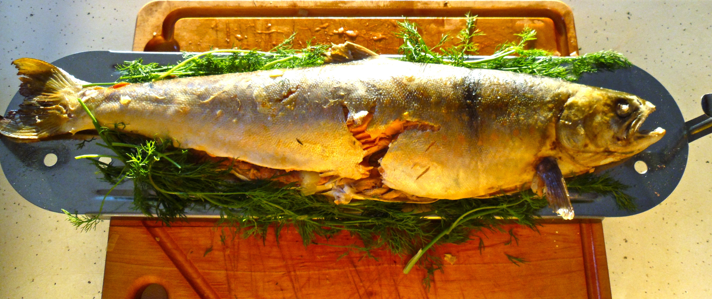
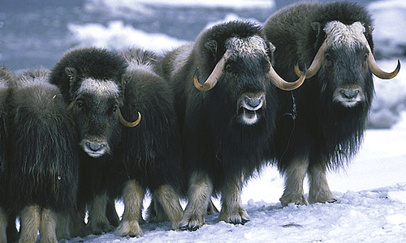

 Northwest Territories Food and Drink Most alcohol is imported and supplies vary from town to town. Hotels and restaurants in main towns normally have a good selection, including Canadian whiskies. Specialities: • Arctic char, grayling, musk ox and caribou.